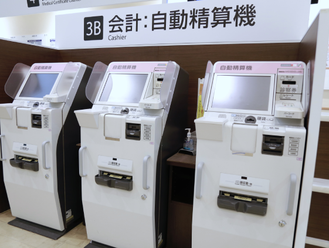

入院費用・お支払い
Hospitalization fee and payment医療費算定方式について
当院に入院された患者さんは、診療行為ごとの料金を計算する従来の「出来高方式」とは異なる、「診断群分類による包括評価」の医療費算定方式が適応されることになりました。この新たな算定方式は、傷病名や手術、処置等の内容に応じて分類された「診断群分類」に基づきそれぞれの分類ごとに定められた１日当たりの定額の医療費を基本として計算する方法です。この算定方式が適応されるのは、入院基本料や検査、投薬、画像診断等の治療項目です。手術や一部の処置等については「出来高方式」により算定されます。※ご質問・お問い合わせは、2階受付5番窓口までお尋ねください。

お支払い手続き
入院中の医療費の請求・お支払いは、以下の2通りとなっております。
- （1）退院当日
退院の際は、入院料の計算が終了次第、スタッフステーションよりお知らせいたします。お支払窓口（2階3B）自動精算機にてお支払いください。診療明細書が必要な方は、窓口スタッフへお声掛けください。 - （2）入院中
月をまたいで継続してご入院されている患者さんには、月末までの入院料を請求いたします。翌月の10日頃に病棟より患者さんに直接お配りいたします。お手元に届きましたらその月内に、お支払窓口（2階3B）自動精算機にてお支払いいただきますようお願いします。
領収証の再発行はいたしかねますので大切に保管してください。なお「支払証明書」の発行には文書料2,200円（税込）が必要となります。
入院料の概算額や不明な点は、入退院受付（2階3B）自動精算機またはスタッフステーションへお気軽にお尋ねください。（平日午前10時から午後4時30分まで）
お支払い方法
お支払窓口（2階3B）にてお願いいたします。（平日午前8時10分〜午後5時）
なお以下の場所に医療費自動精算機を設置しておりますので、ご利用ください。
- ●１階27番 救急受付付近 （24時間対応）
- ●2階3B 会計付近 （平日午前8時10分〜午後5時）
（※午前中は外来患者さんの支払いのため多少の混雑が予想されます）
〈ご利用可能なクレジットカード〉
※医療費自動精算機で各種カードをご利用される際は『暗証番号』が必要となりますので事前にご確認をお願いいたします。